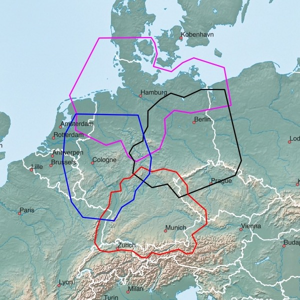
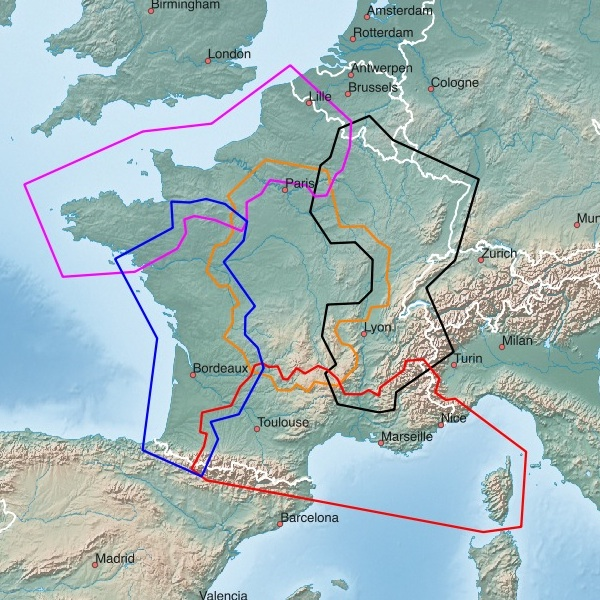
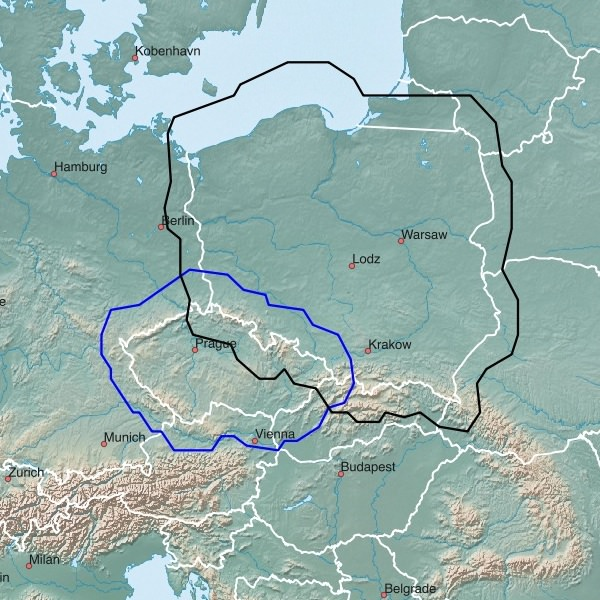
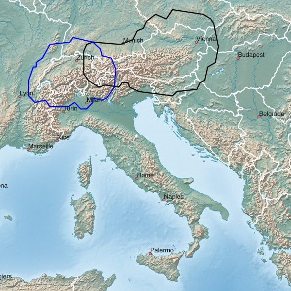
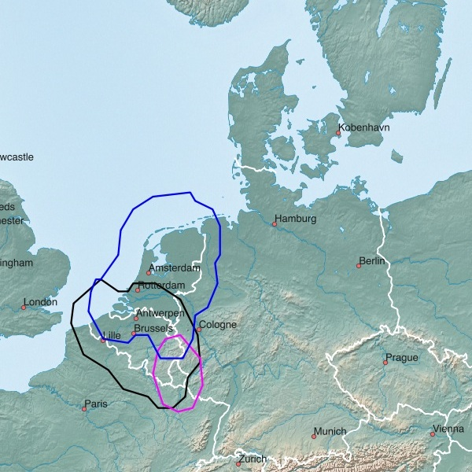
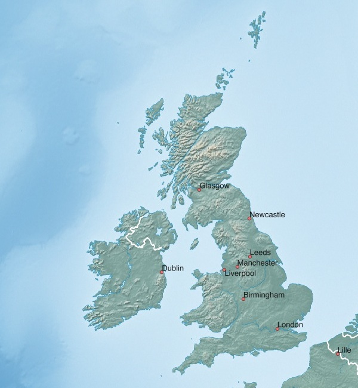
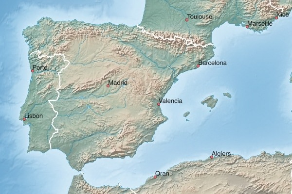
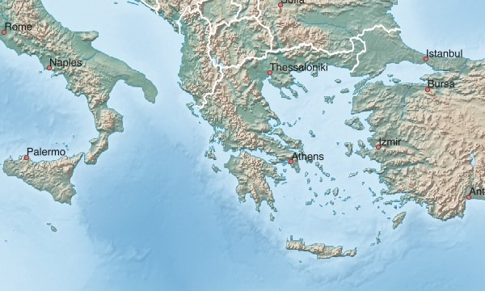

Hinweise zum Download:
- Klick auf das Netbook Icon im PC-Browser: die Karte wird auf den Personal-Computer geladen
- Klick auf das Locus Map Icon im Android-Browser: Karte+Design werden nach Locus Map geladen
| Spanien (ESP+) | Portugal (PRT+) | Malta (MLT) |
| Norditalien (ITA+NORTH) | Süditalien (ITA+SOUTH) |
Spanien (ESP+)
| Spanien 516 MB |
Portugal (PRT+)
| Portugal 97 MB |
Malta (MLT)
| Malta 1 MB |
Norditalien (ITA+NORTH)
| Norditalien 579 MB |
Süditalien (ITA+SOUTH)
| Süditalien 235 MB |
Deutschland (Nord, Süd, West, Ost), deutsche Bundesländer:

| ← | Deutschland-Nord+ 426 MB |
→ | ||
| ← | Deutschland-Süd+ 551 MB |
→ | ||
| ← | Deutschland-West+ 753 MB |
→ | ||
| ← | Deutschland-Ost+ 353 MB |
→ |
Deutsche Bundesländer (alphabetisch):
| ← | Baden-Württemberg 160 MB |
→ | ||
| ← | Bayern 217 MB |
→ |
||
| ← | Berlin 17 MB |
→ | ||
| ← | Brandenburg 61 MB |
→ | ||
| ← | Bremen 6 MB |
→ | ||
| ← | Hamburg 12 MB |
→ | ||
| ← | Hessen 83 MB |
→ | ||
| ← | Mecklenburg-Vorpommern 36 MB |
→ | ||
| ← | Niedersachsen 120 MB |
→ | ||
| ← | Nordrhein-Westfalen 235 MB |
→ | ||
| ← | Rheinland-Pfalz 58 MB |
→ | ||
| ← | Saarland 12 MB |
→ | ||
| ← | Sachsen 62 MB |
→ | ||
| ← | Sachsen-Anhalt 41 MB |
→ | ||
| ← | Schleswig-Holstein 41 MB |
→ | ||
| ← | Thüringen 42 MB |
→ |
Frankreich (Nord, Süd, West, Ost, Zentral):

| ← | Frankreich-Nord+ 348 MB |
→ | ||
| ← | Frankreich-Süd+ 425 MB |
→ | ||
| ← | Frankreich-West+ 348 MB |
→ | ||
| ← | Frankreich-Ost+ 510 MB |
→ | ||
| ← | Frankreich-Zentral+ 388 MB |
→ |
Polen, Tschechien, Slowenien, Slowakei:

| ← | Polen+ 503 MB |
→ | ||
| ← | Tschechien+ 463 MB |
→ | ||
| ← | Slowenien 37 MB |
→ | ||
| ← | Slowakei 110 MB |
→ |
Schweiz, Österreich, Italien:

| ← | Schweiz+ 423 MB |
→ | ||
| ← | Österreich+ 540 MB |
→ | ||
| ← | Italien 692 MB |
→ |
Belgien, Luxemburg, Niederlande, Dänemark:

| ← | Niederlande+ 668 MB |
→ | ||
| ← | Luxemburg+ 65 MB |
→ |
||
| ← | Belgien+ 467 MB |
→ | ||
| ← | Dänemark 83 MB |
→ |
Großbritannien, Irland:

| ← | Großbritannien 412 MB |
→ | ||
| ← | Irland 66 MB |
→ |
Spanien:

| ← | Spanien 470 MB |
→ |
Griechenland:

| ← | Griechenland 159 MB |
→ |
Kanarische Inseln, Island, Norwegen (Süd) (ohne Kartenabbildung):
| ← | Kanarische Inseln 16 MB |
→ | ||
| ← | Island 62 MB |
→ |
||
| ← | Norwegen (Süd) (Ausgabe 14.06) 292 MB |
→ |